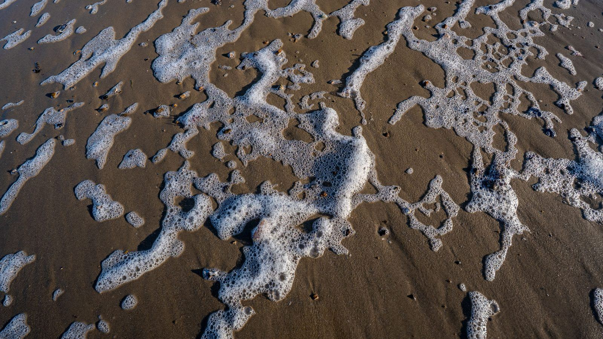

Nereu Ramos terá interdição parcial de 14 a 16 de agosto para obra de esgoto
A obra de rede que ficou na altura da Rua 207.
O relatório nº 49 do Instituto do Meio Ambiente de Santa Catarina, de 16 de outubro, manteve impróprio para banho o ponto em frente à Rua 205, na Praia de Itapema. Foi assim também nos relatórios 47 e 48, com coletas em 28 de setembro, 5 de outubro e 13 de outubro. Nenhum outro dos nove pontos de Itapema ficou reprovado nas três. A conta é nossa, feita em cima dos três relatórios. Na coleta mais recente a cidade teve 2 pontos impróprios de 9, e a Praia da Ilhota voltou ao padrão depois de duas semanas fora.
Em 30 segundos · Modo de Leitura, formato original Santa Informa
O IMA mede a água de banho do litoral toda semana.
O relatório mais novo é o nº 49, de 16 de outubro.
Em Itapema o IMA tem nove pontos de coleta.
Na coleta de 13 de outubro, dois ficaram impróprios.
Um é em frente à Rua 113.
O outro é em frente à Rua 205.
A Rua 205 é o caso que chama atenção.
Ela está impróprio há três coletas seguidas.
Foram 28 de setembro, 5 de outubro e 13 de outubro.
Nenhum outro ponto da cidade repetiu as três.
Essa conta é nossa, em cima dos três relatórios.
A boa notícia da semana é a Praia da Ilhota.
Ela estava impróprio nas duas coletas anteriores.
Agora voltou ao padrão.
Os outros seis pontos da cidade passaram.
Na Costa Esmeralda inteira são 32 pontos.
Nove em Itapema, seis em Porto Belo, dezessete em Bombinhas.
Cinco ficaram impróprios na semana.
Essa soma por região também é conta nossa.
No litoral todo, 194 de 260 pontos estão próprios.
São 74,6%, contra 68,8% na semana anterior.
Impróprio não quer dizer praia interditada.
O selo vale para o ponto da coleta, não para a praia.
A regra é a Resolução Conama 274/2000.
O limite é 800 Escherichia coli por 100 mililitros.
Quem coleta é o Corpo de Bombeiros.
O resultado sai na placa da praia e no site do IMA.
Também sai no aplicativo CBMSC Cidadão.
O IMA pede para não entrar no mar depois de chuva forte.
São de 24 a 48 horas de espera.
O relatório não diz a causa de nenhum resultado.
Nem publica o número medido em cada ponto.
O primeiro relatório da temporada sai em 30 de outubro.
Meio AmbientePublicada em Redação Santa Informa

O relatório nº 49 do Instituto do Meio Ambiente de Santa Catarina, publicado em 16 de outubro, manteve impróprio para banho o ponto de coleta em frente à Rua 205, na Praia de Itapema. É o terceiro relatório seguido com esse resultado. O IMA colheu água ali em 28 de setembro, em 5 de outubro e em 13 de outubro, e nas três vezes o ponto ficou fora do padrão. Nenhum outro ponto de Itapema repetiu isso nas três coletas. A contagem é nossa, porque o IMA publica cada semana separada.
Na coleta de 13 de outubro, o IMA mediu nove pontos em Itapema e reprovou dois: o da Rua 205 e o em frente à Rua 113. Passaram os outros sete, entre eles a Praia da Ilhota, em frente à Rua 1100. A Ilhota é a boa notícia da semana. Ela aparecia como imprópria nos dois relatórios anteriores e voltou ao padrão agora, e o próprio IMA registra a virada no quadro de alterações.
Somando as três cidades da Costa Esmeralda, o IMA mediu 32 pontos nesta rodada: 9 em Itapema, 6 em Porto Belo e 17 em Bombinhas. Cinco ficaram impróprios. Em Porto Belo foi o ponto à esquerda do trapiche Rio Rebelo. Em Bombinhas foram dois, na Avenida Vereador Manoel dos Santos, 1555, e na Praia de Morrinhos. Essa soma por região é conta nossa: o IMA organiza o relatório por município. No litoral catarinense inteiro, 194 dos 260 pontos estão próprios, ou 74,6%, contra 68,8% na semana anterior.
Impróprio não quer dizer praia interditada. A classificação vale para o ponto exato da coleta, não para a praia inteira, e sai da Resolução Conama 274/2000. O ponto é próprio quando, em 80% ou mais das amostras das últimas cinco semanas no mesmo lugar, há no máximo 800 Escherichia coli por 100 mililitros. Vira impróprio quando mais de 20% passam disso, ou quando a última coleta passa de 2.000. Quem recolhe a água é o Corpo de Bombeiros. O resultado vai para a placa na praia, para o site do IMA e para o aplicativo CBMSC Cidadão. O instituto pede ainda para esperar de 24 a 48 horas depois de chuva forte antes do banho.
Em 10 de agosto noticiamos que a concessionária Águas de Itapema interditou parte da Avenida Nereu Ramos, na altura da Rua 207, para obra de esgoto. O ponto que agora acumula três coletas reprovadas fica em frente à Rua 205. Registramos as duas informações lado a lado porque os números de rua são vizinhos, e paramos aí. O relatório do IMA não diz a causa de nenhum resultado e não apuramos ligação entre a obra e a água daquele endereço.
O resumo de 30 segundos está no topo e a versão completa é o texto acima. Aqui ficam as três leituras da casa sobre o mesmo assunto.
Clara, a otimista
Sete dos nove pontos de Itapema passaram, e a Praia da Ilhota voltou ao padrão depois de duas semanas fora. No litoral inteiro o índice subiu de 68,8% para 74,6% de uma semana para a outra. A água está melhorando no exato momento em que a cidade começa a se arrumar para a temporada, que é quando isso mais importa.
E tem a parte que ninguém elogia porque já virou paisagem: esse número existe. Toda semana alguém do Corpo de Bombeiros entra no mar no mesmo endereço, enche um frasco e manda para o laboratório, e o resultado aparece numa placa que qualquer pessoa lê de chinelo. Cidade que mede sabe onde está o problema. Cidade que não mede acha que não tem.
Seu Prudêncio, o criterioso
Merece atenção a repetição. Um ponto reprovado numa semana pode ser chuva, pode ser maré, pode ser o acaso de uma coleta. Três coletas seguidas no mesmo endereço já é outro tipo de informação, e a Rua 205 está nessa situação desde 28 de setembro. Vale acompanhar as próximas duas semanas antes do relatório de 30 de outubro, que abre a temporada.
Outro ponto que merece atenção é o que o relatório não traz. Ele diz próprio ou impróprio e para por aí. Não publica a contagem de bactéria por endereço, não registra chuva nos dias da coleta e não aponta causa. Sem isso, quem mora na rua fica sabendo que tem um problema e não fica sabendo de que tamanho ele é. Uma sugestão útil: a Prefeitura e a concessionária publicarem, junto com o resultado semanal, se há ocorrência de rede naquele trecho. Custa pouco e responde a pergunta antes de ela virar boato.
Dito isso, o sistema está bem montado e é justo reconhecer. A coleta é semanal e no mesmo endereço, o critério é norma federal e não opinião de ninguém, quem colhe é o Corpo de Bombeiros, o laudo tem equipe técnica assinando com registro de conselho, e o resultado chega ao banhista na placa da praia e no aplicativo. Transparência assim, no Brasil, não é comum.
Caco, o sarcástico
A Rua 205 conseguiu uma coisa que nenhuma outra rua de Itapema conseguiu: aparecer em três relatórios seguidos do IMA. Tem morador de condomínio que paga caro para ter esse tipo de constância na vida.
Reclamação registrada: o relatório informa que o ponto está impróprio e não informa mais nada. Nem quanto, nem por quê, nem até quando. É aquele tipo de aviso que resolve metade do problema e deixa a outra metade para você imaginar sozinho na praia.
Mas tá bom porque a placa está lá, e isso já é mais do que muita praia famosa oferece. Em Itapema dá para olhar a placa, andar duzentos metros e entrar na água em outro ponto que passou. Chama-se progresso: antigamente a gente entrava em qualquer lugar sem saber de nada.
Fontes: O resultado de cada ponto de Itapema, de Porto Belo e de Bombinhas na coleta de 13 de outubro de 2026, o quadro de alteração de condição que registra a volta da Praia da Ilhota a própria, a contagem geral de 194 pontos próprios em 260, a informação de que o ponto 96 de Florianópolis não foi colhido por falta de acesso, o aviso de que esta é a terceira semana de amostragens semanais consecutivas e a data de 30 de outubro para o primeiro relatório da temporada 2026/2027 estão no relatório nº 49 de balneabilidade do IMA, de 16 de outubro de 2026, baixado e lido por nós em 19 de outubro. Os resultados das duas coletas anteriores no mesmo ponto estão no relatório nº 48, de 9 de outubro, com coleta em 5 de outubro, e no relatório nº 47, de 2 de outubro, com coleta em 28 de setembro, os dois também baixados e lidos por nós. A contagem de três coletas seguidas no ponto da Rua 205, a soma dos 32 pontos da Costa Esmeralda e a comparação entre 68,8% e 74,6% de pontos próprios são contas nossas sobre esses três relatórios. O critério da Resolução Conama nº 274, de 29 de novembro de 2000, o limite de 800 Escherichia coli por 100 mililitros, a janela de cinco semanas, a profundidade de coleta, a autoria do Corpo de Bombeiros Militar pelo Ato Conjunto nº 001/2023, a divulgação em placa, site e aplicativo CBMSC Cidadão e a recomendação de esperar de 24 a 48 horas depois de chuva forte estão na seção de informações complementares do mesmo relatório nº 49. Conferimos os limites de 800 e de 2.000 Escherichia coli por 100 mililitros no texto oficial da Resolução Conama nº 274, de 29 de novembro de 2000, baixada do site do próprio Conama. A nota do Governo do Estado que anuncia o relatório da semana está em IMA divulga relatório de balneabilidade referente à semana de 12 a 16 de outubro 2026. A obra de esgoto da concessionária Águas de Itapema na Avenida Nereu Ramos, na altura da Rua 207, está em Nereu Ramos terá interdição parcial de 14 a 16 de agosto para obra de esgoto, nossa matéria de 10 de agosto de 2026. Procuramos no site do IMA algum documento que explicasse a ausência do ponto 06 de Itapema e não encontramos, por isso a lacuna fica registrada e não virou número.
A obra de rede que ficou na altura da Rua 207.
 Itapema · Poder Público
Itapema · Poder PúblicoO que mais está na conta da concessionária de água.
Outra comparação entre as três cidades da Costa Esmeralda.